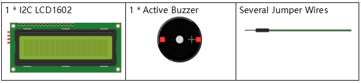
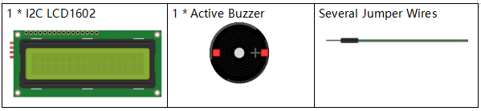

Nota
Ciao, benvenuto nella Community su Facebook per gli appassionati di SunFounder Raspberry Pi, Arduino e ESP32! Approfondisci le tue conoscenze su Raspberry Pi, Arduino ed ESP32 insieme ad altri appassionati.
Perché unirti a noi?
Supporto esperto: Risolvi i problemi post-vendita e le sfide tecniche con l’aiuto della nostra community e del nostro team.
Impara e Condividi: Scambia consigli e tutorial per migliorare le tue competenze.
Anteprime Esclusive: Ottieni accesso anticipato agli annunci dei nuovi prodotti e anteprime esclusive.
Sconti Speciali: Approfitta di sconti esclusivi sui nostri prodotti più recenti.
Promozioni e Giveaway Festivi: Partecipa a concorsi e promozioni in occasione delle festività .
👉 Pronto a esplorare e creare con noi? Clicca su [Qui] e unisciti oggi stesso!
3.1.8 Monitor di Surriscaldamento
Introduzione
Potresti voler realizzare un dispositivo di monitoraggio della temperatura per rilevare il surriscaldamento in vari ambienti. Ad esempio, in fabbrica, per attivare un allarme e spegnere automaticamente la macchina in caso di surriscaldamento del circuito. In questa lezione, utilizzeremo un termistore, un joystick, un cicalino, un LED e un LCD per creare un dispositivo intelligente di monitoraggio della temperatura con soglia regolabile.
Componenti
 

Schema di Collegamento
T-Board Name |
physical |
wiringPi |
BCM |
GPIO17 |
Pin 11 |
0 |
17 |
GPIO18 |
Pin 12 |
1 |
18 |
GPIO27 |
Pin 13 |
2 |
27 |
GPIO22 |
Pin15 |
3 |
22 |
GPIO23 |
Pin16 |
4 |
23 |
GPIO24 |
Pin18 |
5 |
24 |
SDA1 |
Pin 3 |
||
SCL1 |
Pin 5 |

Procedure Sperimentali
Passo 1: Costruisci il circuito.

Passo 2: Vai nella cartella del codice.
cd ~/davinci-kit-for-raspberry-pi/c/3.1.8/
Passo 3: Compila il codice.
gcc 3.1.8_OverheatMonitor.c -lwiringPi -lm
Passo 4: Esegui il file eseguibile.
sudo ./a.out
Quando il codice è in esecuzione, la temperatura attuale e la soglia di alta temperatura (40**°C) vengono visualizzate su **I2C LCD1602. Se la temperatura attuale supera la soglia, il cicalino e il LED si accendono per avvisare.
Nota
Se non funziona dopo l’esecuzione o compare un messaggio di errore: "wiringPi.h: No such file or directory", consulta Il codice C non funziona?.
Joystick: il joystick serve per regolare la soglia di alta temperatura. Spostando il Joystick lungo gli assi X e Y si può aumentare o diminuire la soglia. Premere il Joystick una volta per reimpostare la soglia al valore iniziale.
Spiegazione del Codice
int get_joystick_value(){
    uchar x_val;
    uchar y_val;
    x_val = get_ADC_Result(1);
    y_val = get_ADC_Result(2);
    if (x_val > 200){
        return 1;
}
    else if(x_val < 50){
        return -1;
}
    else if(y_val > 200){
        return -10;
}
    else if(y_val < 50){
        return 10;
}
else{
        return 0;
}
}
Questa funzione legge i valori di X e Y. Se X>200, restituisce «1»; X<50, restituisce «-1»; y>200, restituisce «-10»; e y<50, restituisce «10».
void upper_tem_setting(){
    write(0, 0, "Upper Adjust:");
    int change = get_joystick_value();
    upperTem = upperTem + change;
    char str[6];
    snprintf(str,3,"%d",upperTem);
write(0,1,str);
int len;
  len = strlen(str);
  write(len,1,"             ");
delay(100);
}
Questa funzione regola la soglia e la visualizza su I2C LCD1602.
double temperature(){
    unsigned char temp_value;
    double Vr, Rt, temp, cel, Fah;
    temp_value = get_ADC_Result(0);
    Vr = 5 * (double)(temp_value) / 255;
    Rt = 10000 * (double)(Vr) / (5 - (double)(Vr));
    temp = 1 / (((log(Rt/10000)) / 3950)+(1 / (273.15 + 25)));
    cel = temp - 273.15;
    Fah = cel * 1.8 +32;
    return cel;
}
Legge il valore analogico di CH0 (termistore) di ADC0834 e lo converte in temperatura.
void monitoring_temp(){
    char str[6];
    double cel = temperature();
    snprintf(str,6,"%.2f",cel);
    write(0, 0, "Temp: ");
    write(6, 0, str);
    snprintf(str,3,"%d",upperTem);
    write(0, 1, "Upper: ");
    write(7, 1, str);
delay(100);
    if(cel >= upperTem){
        digitalWrite(buzzPin, HIGH);
        digitalWrite(LedPin, HIGH);
}
    else if(cel < upperTem){
        digitalWrite(buzzPin, LOW);
        digitalWrite(LedPin, LOW);
}
}
Quando il codice è in esecuzione, la temperatura attuale e la soglia di alta temperatura (40**°C) vengono visualizzate su **I2C LCD1602. Se la temperatura attuale supera la soglia, il cicalino e il LED si accendono per avvisare.
int main(void)
{
setup();
    int lastState =1;
    int stage=0;
    while (1)
{
        int currentState = digitalRead(Joy_BtnPin);
        if(currentState==1 && lastState == 0){
            stage=(stage+1)%2;
delay(100);
lcd_clear();
}
        lastState=currentState;
        if (stage==1){
upper_tem_setting();
}
else{
monitoring_temp();
}
}
    return 0;
}
La funzione main() include l’intero processo del programma:
1) All’avvio del programma, il valore iniziale di stage è 0 e la temperatura attuale insieme alla soglia di alta temperatura (40**°C) vengono visualizzate su **I2C LCD1602. Se la temperatura supera la soglia, il cicalino e il LED si attivano per avvisare.
2) Premendo il Joystick, stage diventa 1, consentendo di regolare la soglia di alta temperatura. Spostando il Joystick lungo gli assi X e Y si può aumentare o diminuire la soglia corrente. Premere nuovamente il Joystick per reimpostare la soglia al valore iniziale.